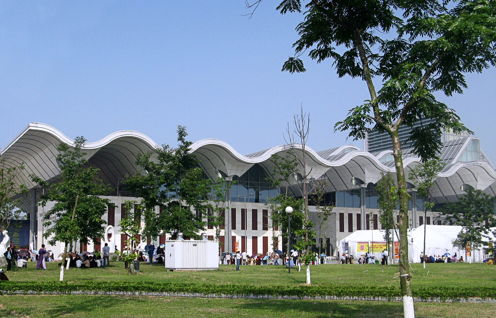
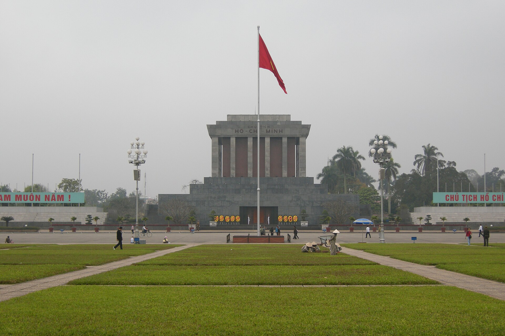

Bối cảnh lịch sử và thời gian
Sau 25 năm Đổi mới (1986–2011), Việt Nam đạt nhiều thành tựu về kinh tế, chính trị, xã hội và hội nhập quốc tế. Tuy nhiên, khủng hoảng kinh tế toàn cầu 2008–2009 cùng những hạn chế trong nước đặt ra yêu cầu tiếp tục đổi mới.


Cơ cấu nhân sự
Phương châm và những điểm nổi bật
“Tiếp tục nâng cao năng lực lãnh đạo và sức chiến đấu của Đảng, phát huy sức mạnh toàn dân tộc, đẩy mạnh toàn diện công cuộc đổi mới, tạo nền tảng để đến năm 2020 nước ta cơ bản trở thành nước công nghiệp theo hướng hiện đại”.
Các văn kiện quan trọng
Cương lĩnh năm 2011
Xác định 5 bài học kinh nghiệm và 8 phương hướng cơ bản xây dựng chủ nghĩa xã hội.
Chiến lược phát triển kinh tế – xã hội 2011–2020
Đề ra mục tiêu phát triển nhanh, bền vững và ba đột phá chiến lược.
Báo cáo chính trị Đại hội XI
Tổng kết nhiệm kỳ trước, xác định phương hướng, nhiệm vụ giai đoạn 2011–2015.
Điều lệ Đảng sửa đổi, bổ sung
Quy định về tổ chức và hoạt động của Đảng.
Ba đột phá chiến lược
Hoàn thiện thể chế kinh tế thị trường định hướng xã hội chủ nghĩa.
Phát triển nguồn nhân lực, nhất là nguồn nhân lực chất lượng cao.
Xây dựng hệ thống kết cấu hạ tầng đồng bộ.
Các định hướng phát triển trọng tâm
Kinh tế
Đổi mới mô hình tăng trưởng, cơ cấu lại nền kinh tế, đẩy mạnh công nghiệp hóa, hiện đại hóa.
Chính trị và xây dựng Đảng
Nâng cao năng lực lãnh đạo, phát huy dân chủ và phòng, chống tham nhũng.
Văn hóa – xã hội
Phát triển văn hóa, bảo đảm an sinh và nâng cao đời sống nhân dân.
Giáo dục – khoa học
Đổi mới giáo dục, phát triển nguồn nhân lực và ứng dụng khoa học – công nghệ.
Quốc phòng – an ninh
Bảo vệ chủ quyền, giữ vững an ninh quốc gia.
Đối ngoại
Mở rộng hợp tác, chủ động và tích cực hội nhập quốc tế.
Các Hội nghị Trung ương tiêu biểu
Ban Chấp hành Trung ương Đảng khoá XI đã họp Hội nghị lần thứ 14, từ năm 2011 đến tháng 01/2016, nhằm cụ thể hóa các chủ trương và quyết sách của Đại hội XI.
Hội nghị Trung ương 4
Tập trung vào công tác xây dựng Đảng và phát triển kết cấu hạ tầng. Nổi bật là Nghị quyết 12-NQ/TW ngày 16/01/2012 về “Một số vấn đề cấp bách về xây dựng Đảng hiện nay”.
Hội nghị Trung ương 7
Ban hành các nghị quyết về công tác dân vận, ứng phó biến đổi khí hậu và bảo vệ môi trường.
Hội nghị Trung ương 8
Ban hành các nghị quyết về chiến lược bảo vệ Tổ quốc và đổi mới căn bản, toàn diện giáo dục và đào tạo.
Đánh giá chung
Kết quả
Giai đoạn 2011–2015, kinh tế tiếp tục tăng trưởng, hội nhập quốc tế được mở rộng, an sinh xã hội và công tác xây dựng Đảng được chú trọng.
Hạn chế
Chất lượng tăng trưởng, sức cạnh tranh và quá trình hoàn thiện thể chế còn hạn chế; tham nhũng, lãng phí vẫn là những vấn đề cần giải quyết.
Ý nghĩa
Đại hội XI là dấu mốc quan trọng trong tiến trình Đổi mới, xác định những định hướng chiến lược cho phát triển đất nước giai đoạn 2011–2020.
Nguồn tham khảo
- Nghị quyết Đại hội đại biểu toàn quốc lần thứ XI – Báo Chính phủ
- Toàn văn 4 văn kiện Đại hội XI – Báo Chính phủ
- Nghị quyết 12-NQ/TW của Hội nghị Trung ương 4 – Tư liệu Văn kiện Đảng
- Báo cáo chính trị Đại hội XII – Đánh giá nhiệm kỳ 2011–2015
Nguồn ảnh (Wikimedia Commons): Cờ Đảng và cờ Tổ quốc – Vuong Tri Binh, CC BY-SA 4.0; Trung tâm Hội nghị quốc gia – Lưu Ly (Wikipedia tiếng Việt), phạm vi công cộng; Lăng Chủ tịch Hồ Chí Minh – Vyacheslav Argenberg, CC BY 4.0; Chân dung đồng chí Nguyễn Phú Trọng – Presidential Press and Information Office, CC BY 4.0.